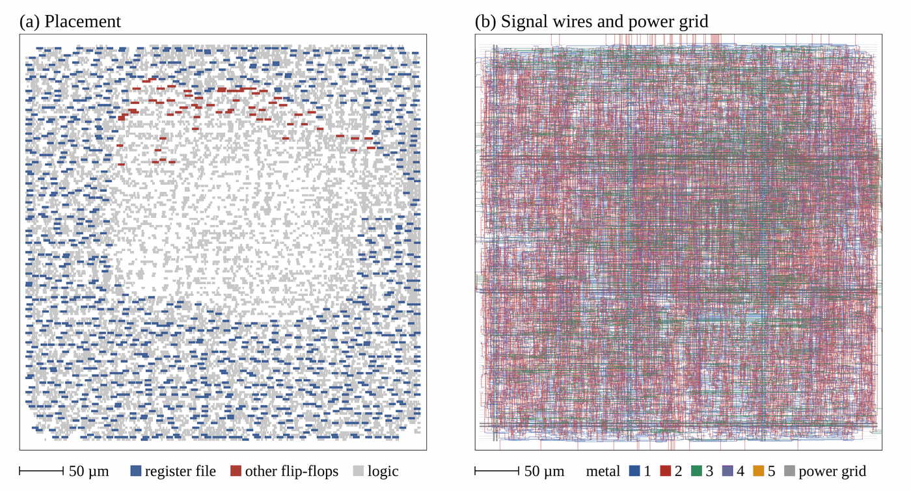

Projects
RV32I-Alpha implements the 37 instructions of the RV32I base ISA, in VHDL and in SystemVerilog, with a two-stage pipeline (fetch, execute). The register of the synchronous instruction memory doubles as the pipeline register.
ECALL, EBREAK and misaligned accesses or jump
targets stop the core in a trap state.The source code and the verification and implementation scripts are on GitHub (Apache-2.0).

| Instruction checks | riscv-formal: 37 instruction checks plus reg,
pc_fwd, pc_bwd, causal, unique,
liveness, ill and cover. Bounded model checking,
depth 10–15 cycles. |
|---|---|
| Memory ports | 3 additional SymbiYosys tasks: instruction port, data port with random wait states, independent reference for illegal encodings. Depth 10–16. |
| Mutation testing | 8 bugs injected one at a time while the checks were written; each was caught by at least one check. |
| Equivalence | VHDL and SystemVerilog versions proven equivalent with Yosys
(equiv_make / equiv_induct): 1826 / 1826 cells. |
| Simulation | Instruction torture test passes in 197 cycles (Icarus Verilog). |
Bounded checks show the absence of counterexamples up to the stated depth, not correctness for all executions.
| FPGA | Digilent Basys 3 (Xilinx Artix-7 XC7A35T), Vivado non-project flow. |
|---|---|
| SKY130 synthesis | Yosys, sky130_fd_sc_hd, typical corner: 4 696 cells, 59 557 µm² of standard cells (register file built from flip-flops). |
| SKY130 place and route | OpenROAD, die 375.8 × 375.8 µm (0.141 mm²), 47 % core utilization, 234 mm of signal wire, 42 237 vias, no violations reported by the detailed router. Not done: power grid, clock-tree synthesis, timing closure, sign-off DRC/LVS. |
Logic-gate networks replace multiply-accumulate operations by trained two-input Boolean gates. Published comparisons usually count gates or FPGA look-up tables, and leave out the cost of getting data into and out of the network.
I built an open flow that goes from a trained model to a SKY130 netlist, places it with OpenROAD, simulates it at gate level on real test images, and derives area and energy from the recorded switching activity. It also checks that the gate-level netlist reproduces the software model bit for bit. Write-up in progress.
Inference accelerators are moving to 4-bit weights, and each vendor picks a format: INT4, MXFP4 (OCP) or NVFP4 (NVIDIA). I measured how much quality each format keeps on three open models (Qwen2.5-0.5B, Qwen2.5-1.5B, SmolLM2-1.7B), and whether a trellis-coded quantizer (QTIP-style) saves enough bits over the best scalar format to be worth its decoder in hardware.
All linear layers of the transformer blocks are quantized by round-to-nearest (Viterbi for the trellis), without calibration data, and perplexity is measured on WikiText-2 and C4. Every scalar format is tested with and without a random Hadamard rotation. The decision rule was fixed before the runs: keep the trellis only if it saves at least 10 % of the bits against the best scalar format, on every model and corpus.
| vs. NVFP4 | The trellis reaches the same perplexity with 11–17 % fewer bits. |
|---|---|
| vs. INT4, MXFP4 | About 15–20 % fewer bits. |
| vs. Lloyd-Max | Only 6–9 % fewer bits. A non-uniform scalar 4-bit format (Lloyd-Max) with rotation, at 4.25 bits per weight, already captures most of the gain, so the rule fails: the trellis is not worth its decoder. |
Simulated quantization (no kernels, so no speed or energy measurement), weights only, small models, one seed.
Code, raw results and analysis are on GitHub (Apache-2.0).